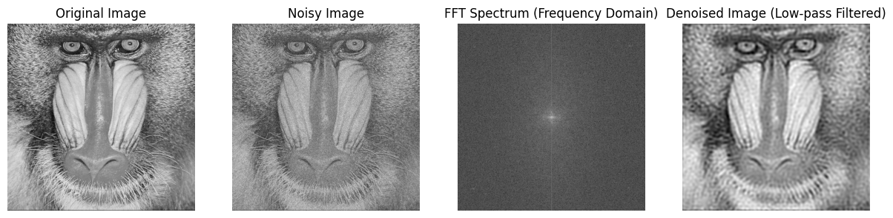
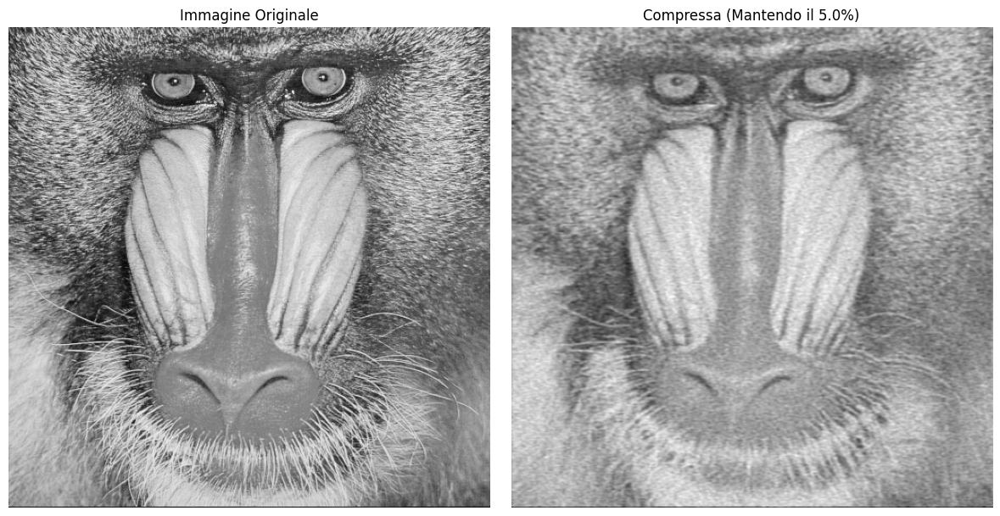

Discrete Fourier Transform 2D#
To deal with images, we must extend the DFT and IDFT to 2D as follows (where \(m,n\) are the spatial coordinates and \(k,l\) are the frequency coordinates):
DFT2: $\(\hat f_{k,l}=\sum_{m=0}^{N-1}\sum_{n=0}^{N-1} f_{m,n} e^{-i \frac{2 \pi}{N}(km+ln)}, \ \ m,n=0, \ldots N-1 \)$
IDFT2: $\( f_{m,n}=\sum_{k=0}^{N-1}\sum_{l=0}^{N-1} \hat f_{k,l} \frac{1}{N^2} e^{i \frac{2 \pi}{N}(km+ln)}, \ \ k,l=0, \ldots N-1 \)$
How to read the DFT of an image?

Examples.
The first image is a cosine function along x axis. The Fourier transform of a cisine function (as we have seen in 1D) is essentially one frequency (and its negative counterpart). The central point at 0 is due to the fact that the mean of the brightness is 0 (in a range [0,255] is 128 but it can be shifted to 0).
The second image is an image of a cosine function of higher frequency. We have still three dots but more separated because the frequecy has increased.
The third image is a sum of two cosine functions.


Examples with simple objects:
High frequencies are necessary to create the borders of the objects.

Examples with more natural images:

Image filtering in the frequency domain#
The values in the Fourier domain, usually called frequencies, have some useful properties for image manipulation, such as
Reduce the noise on the image (denoising)
Reduce the space occupied by the image (compression)
Denoising image with DFT
To denoise an image using a Fast Fourier Transform (FFT) filter, we can use a simple method of applying a low-pass filter in the frequency domain.
The idea is to suppress high-frequency noise, which typically exists in the higher frequencies of the Fourier spectrum, while preserving the low-frequency components, which generally correspond to the important structure of the image.
To reduce the ringing artifacts, you can apply a soft cutoff or smooth filter in the frequency domain. This can be done by using a smoother low-pass filter, such as a Gaussian filter or Butterworth filter, instead of a sharp circular mask. These filters gradually attenuate the high frequencies, which helps to avoid the abrupt transitions that lead to ringing.
Parameter: The cutoff_frequency defines how aggressive the denoising is. A higher value keeps more details but may allow some noise to persist, while a lower value results in stronger denoising but may also remove fine details.
import cv2
import numpy as np
import matplotlib.pyplot as plt
def denoise_fft(image_path, cutoff=30):
# 1. Load the image (grayscale for simplicity)
img = cv2.imread(image_path, cv2.IMREAD_GRAYSCALE)
img = img.astype(np.float64) / 255.0 # Normalizzazione
# add gaussian noise
noise = np.random.normal(0, 0.1, img.shape)
noisy_img = img + noise
# 2. FFT: Transform image to frequency domain
# We use fftshift to move the zero-frequency component to the center
f_transform = np.fft.fft2(noisy_img)
f_shift = np.fft.fftshift(f_transform)
# 3. Low-pass filter: Construct a circular mask
rows, cols = img.shape
crow, ccol = rows // 2, cols // 2
y, x = np.ogrid[:rows, :cols]
mask = ((x - ccol)**2 + (y - crow)**2 <= cutoff**2).astype(np.float64)
# 4. Apply the filter (fshift * mask)
f_shift_filtered = f_shift * mask
# 5. Inverse FFT: Transform back to spatial domain
# Shift back before performing inverse FFT
f_ishift = np.fft.ifftshift(f_shift_filtered)
img_back = np.fft.ifft2(f_ishift)
img_back = np.abs(img_back) # Get the magnitude
# --- Visualization ---
plt.figure(figsize=(15, 5))
plt.subplot(141), plt.imshow(img, cmap='gray')
plt.title('Original Image'), plt.axis('off')
plt.subplot(143), plt.imshow(np.log(1 + np.abs(f_shift)), cmap='gray')
plt.title('FFT Spectrum (Frequency Domain)'), plt.axis('off')
plt.subplot(144), plt.imshow(img_back, cmap='gray')
plt.title('Denoised Image (Low-pass Filtered)'), plt.axis('off')
plt.subplot(142), plt.imshow(noisy_img, cmap='gray')
plt.title('Noisy Image'), plt.axis('off')
plt.show()
# Run the function
denoise_fft('Baboon.bmp', cutoff=50)

Compressing images with DFT
The Discrete Fourier Transform (DFT) plays a significant role in image compression, a crucial process for reducing file sizes while maintaining image quality.
By transforming the spatial representation of an image into the frequency domain, the DFT allows us to identify and retain only the most significant frequency components, discarding less important data without a substantial loss of detail.
Techniques such as the JPEG compression algorithm leverage this principle, using transformations similar to the DFT to efficiently encode image data.
By focusing on the most critical frequencies, the DFT enables significant reductions in image size, allowing for faster transmission and storage while preserving essential features.
Parameter: threshold. This is the fraction of the maximum magnitude below which the frequency components are discarded. You can adjust this to control the compression rate. A lower value will preserve more high-frequency details and result in less compression, while a higher value will discard more frequencies, resulting in more compression
import cv2
import numpy as np
import matplotlib.pyplot as plt
def compress_image_fft(image_path, keep_fraction=0.1):
# 1. Read the image (in float per precisione)
img = cv2.imread(image_path, cv2.IMREAD_GRAYSCALE)
if img is None:
print("Errore: Immagine non trovata.")
return
img_float = img.astype(float)
# 2. FFT: Transform the image in the frequency space
f_transform = np.fft.fft2(img_float)
# separately compte magnitude and phase
magnitude = np.abs(f_transform)
phase = np.angle(f_transform)
# 3. Compression: we cut-off the low frequencies
# and we order the magnitudes to find a threshold value
magnitude_sorted = np.sort(magnitude.ravel())
threshold_idx = int(len(magnitude_sorted) * (1 - keep_fraction))
threshold_value = magnitude_sorted[threshold_idx]
# We apply the threshold and set equal to zero every value below the threshold
magnitude_compressed = magnitude * (magnitude > threshold_value)
# 4. Reconstruction:
# we use the formula: F = Mag * e^(i * Phase)
f_reconstructed = magnitude_compressed * np.exp(1j * phase)
img_compressed = np.fft.ifft2(f_reconstructed)
img_compressed = np.real(img_compressed) # Prendiamo la parte reale
# 5. Display: comparison between original and compressed
plt.figure(figsize=(12, 6))
plt.subplot(121), plt.imshow(img, cmap='gray')
plt.title('Immagine Originale'), plt.axis('off')
plt.subplot(122), plt.imshow(img_compressed, cmap='gray')
plt.title(f'Compressa (Mantendo il {keep_fraction*100}%)'), plt.axis('off')
plt.tight_layout()
plt.show()
# Example: we keep only 5% of the frequencies
compress_image_fft('baboon.bmp', keep_fraction=0.05)
